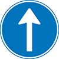

Home
Verkeersborden
Over ons
Test je kennis
Test hier je kennis over de Nederlandse verkeersborden!
Wat betekend dit bord?
A: Gebod voor alle bestuurders het bord voorbij te gaan aan de zijde die de pijl aangeeft.
B:Gebod tot het volgen van één van de rijrichtingen die op het bord zijn aangegeven. Er zijn vergelijkbare borden voor andere rijrichtingen.
C:Gebod tot het volgen van de rijrichting die op het bord is aangegeven. Er zijn vergelijkbare borden voor andere rijrichtingen.
Welk bord past bij deze tekst? Gebod tot het volgen van de rijrichting die op het bord is aangegeven.Er zijn vergelijkbare borden voor andere rijrichtingen.
A
B
C
Waar kan je voorrangsborden goed aan herkennen?
A: De kleur
B: Hun unieke vorm
C: De achterkant van het bord.
Welke uitleg past bij dit bord?
A: Einde voorrangsweg
B: Begin voorrangsweg.
C: Voorrang van rechts.
Submit